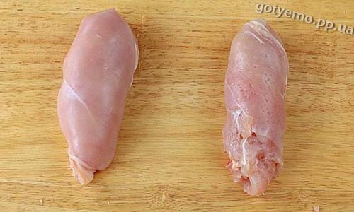

Борщ
Борщ
Несомненная польза борща - содержащиеся в нем овощи, которые не только богаты клетчаткой (она обладает свойством сорбента - мягко выводит из организма токсины), но и сохраняют полезные свойства в вареном виде. В свекле много витаминов группы В, РР, йода, калия, железа
Сало
Сало
Сало – высококалорийный продукт, который содержит около 770 ккал на 100 граммов. Поэтому употреблять его нужно крайне осторожно и в умеренных количествах. Сало богато жирорастворимыми витаминами A, E и D, и, главное, оно не бывает радиоактивным и не содержит канцерогенов. В свином сале есть арахидоновая кислота, которая относится к ненасыщенным жирам и является одной из незаменимых жирных кислот. Арахидоновая кислота помогает организму включить «иммунный ответ» при встрече с вирусами и бактериями. Поэтому свиное сало рекомендуется включать в зимнюю диету.
Голубцы
Голубцы
В 100 г классических голубцов содержится 160 ккал. Если вместо мяса использовать грибы и при этом оставить рис, калорийностью блюда снизиться до 60 ккал.Данное блюдо характеризуется высокой питательностью, благодаря чему удается удовлетворить чувство голода, не перегружая при этом желудок.Входящая в состав голубцов, капуста богата витамином С и фолиевой кислотой, которая способствует улучшению мозговой активности.Нередко при изготовлении голубцов используют морковь и помидоры, которые богаты каротином, локопином и витамином А — замедляют процессы старения в организме.Однако чрезмерное употребление голубцов может привести к отравлениям и увеличению веса.
 Котлеты по-киевски
Котлеты по-киевски
Котлеты давным-давно делают не только из мяса, а и из рыбы, овощей и даже сладкой карамельной массы. Польза готового продукта напрямую зависит от того, из чего приготовлено блюдо. Чем выше качество и полезность исходного продукта, тем больше пользы вашему организму принесет такая котлета.
Торт киевский Поднимает настроение.